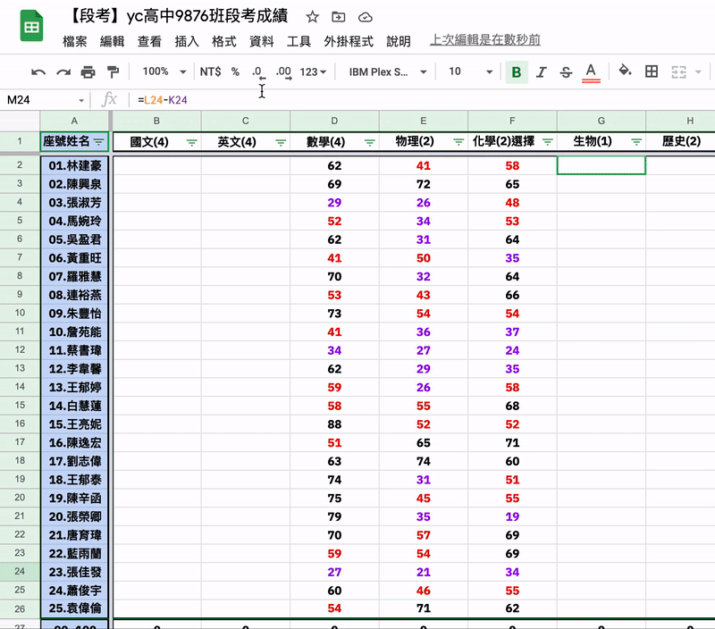
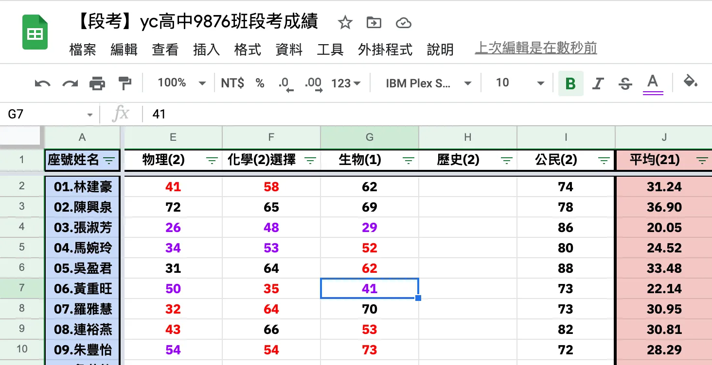

段考結束後，大家總要面臨段考成績的折磨（嗚嗚嗚），我們班總是會在段考完就瘋狂跟老師要成績，但只有貼進群組，沒有人統整、規劃這些成績，成績可能還真的只是那一次段考，沒有太大作用吧。
因此我們班有了線上成績表（每次段考進化中），會不定期推出各種分析功能，最近想挑戰更刺激的：「在 A裝置 key 入成績時，投影在黑板上的 B裝置 呈現著成績試算表並即時更新某科的排名」，讓大家考完試也無法逃出成績的魔掌。

只要執行寫好的巨集，我們在輸入成績時就能達到「即時排名成績的效果了」
我覺得滿好解決的，我們的成績表使用 Google Sheets 建置，所以巨集主要 Base on Javascript。
先大概講解一下實作的流程，需要大概掌握「巨集」、「Javascript 迴圈」這兩個概念。
巨集
會計類可能會比較容易用到（？）在 Excel 常常會需要自動化跑一些步驟，而巨集專門幫人類省去這些重複性動作，只需要先指定好巨集該做哪些事情，只要一鍵點下去就會自動做好這些以前需要手動做的事了。
而巨集通常可以執行先前錄製片段（錄製步驟，例如我在A3換成紅色，再將B6刪除），也可以在錄製完步驟後編輯程式碼（例如我加上迴圈功能，或讓巨集執行完後跳出提示訊息提醒自己）。
迴圈 Base on Javascript
因為巨集只會執行一次，但我們要的是「持續即時更新」，因此我們需要讓巨集啟動後，不斷重複執行。而 Google Sheets 的程式碼仰賴 Google Script 平台編譯執行，基於 Google Script 主要以執行 Javascript語言 為主，因此我們會需要認識 Javascript 的這幾個函數：
- function（巨集）
- variables（變數，用於計次）
- for（loop迴圈）
開始囉
好的，大概掌握素材後，我們這次的主題為「即時更新排名」（白話：重複設定篩選儲存列 Z to A，也就是數字最大排到最小）。前面有提到「巨集」幫我們節省掉原本我們要重複執行的步驟，也認識了一下 Javascript 程式語法，那麼我們今天的行程大概是「錄製排序成績的巨集」->「設定休息緩衝時間，避免持續無間斷瘋狂執行（選用）」->「測試完成」。
準備一份班級成績單
就來到我們的試算表啦～首先，我們需要一個已經設定好篩選範圍的班級成績單（Google Sheets 的喔，不是 Excel），裡面可以先填好一些成績，這裡以「生物」欄示範。

先用 Google Sheets 製作一個簡易的成績單。
錄製排序成績的巨集
接著依序點選上方選單的「工具」->「巨集」->「錄製巨集」，即可開始錄製接下來的操作步驟。

從篩選的選單中選擇 Z to A。
這時，我們的第一個步驟「錄製排序成績的巨集」其實就已經完成了！可以看到成績已經排序好，從第一名排到最後一名，這時我們按下下方巨集錄製提示框的「儲存」就可以結束錄製巨集的功能了，隨後我們只需要將巨集命名為「排序生物成績」，方便我們後續執行時辨識用。

查看成果並按下「儲存」，退出錄製巨集模式，並將其命名。

寫迴圈讓這段巨集能重複執行
剛其實會發現到，這段巨集只會執行一次，也就是說輸入新的成績後，就必須再按一次「排序生物成績」的個巨集來幫我重新排序。
至於錄製巨集的這些步驟，都會轉換為程式碼，這時我們就需要依序點開上方選單的「工具」->「巨集」-> 「管理巨集」，在跳出的管理巨集視窗中找到剛剛命名的「排序生物成績」巨集，依序點選右邊的「三顆點點」->「編輯指令碼」，來打開編寫程式碼的 Google Script 平台。

從選單的管理介面進入 Google Script

進入 Google Script 編寫指令碼，認識一下整體架構
好的，一進來應該可以看到中間有一行一行的程式碼，不用怕，我們就來好好認識他們。

\\進入 Google Script 編寫程式碼囉////
之前如果像我一樣已經使用過錄製巨集，可能這個畫面中會有一坨接一坨的程式碼，要辨識出剛剛錄製的「排序生物成績」，有幾個方法：
- 將 Coding Part 滑到最下面，通常新的程式碼會從最下面加上去。
- 找
G1（剛剛執行篩選「生物」的儲存格編號），會發現這段程式碼：
https://gist.github.com/yc97463/342a277bea32a398b1b1a9836d8ba50f
這段程式碼，就是剛剛錄製「排序生物成績」的程式碼組合包 function {}，簡單來說他會先連結這份試算表 var spreadsheet 制定變數，接著找到 G1 這個儲存格，接著執行篩選 getFilter ，接著我們就來加上「寫迴圈讓這段巨集能重複執行」的迴圈程式碼吧！
寫迴圈讓這段巨集能重複執行
好，為了形成迴圈，我們需要在 function {}內加入一個 for ()迴圈，以及定義一個變數 loop_i來計算總共執行了幾次。
而下面程式碼中的 loop_i 是我們設定的計次變數，我們指定迴圈在 loop_i <= 100 前一直執行這段「排序生物成績」的程式碼，當 loop_i 被從 0 加到 100 的時候才會停下來。
https://gist.github.com/yc97463/440978ae1509c757d10e0a3a9fa14fcc
這時，我們就可以來執行看看，看一下成效如何。依序點選上方選單的「工具」->「巨集」->名為「排序生物成績」的巨集，接著就會開始執行了。這個畫面呈現另一隻手機正在輸入大家的成績，但成績排序即時被調整為成績最高到最低的狀況。

只要執行寫好的巨集，我們在輸入成績時就能達到「即時排名成績的效果了」
結論
Google Sheets 是個好用的東西 🤩，一方面可以線上編輯，另一方面當然就是 Base on Javascript 帶來的好處，比較容易推坑上手 🥰（當然這些會用到的功能要先熟透啦），也可以串接 API 服務進行資料處理，用處很多。
相關應用也可以參考 宋育泰 的「寫給文組看的程式文：迴圈是個好東西，每個編輯都該有一個」